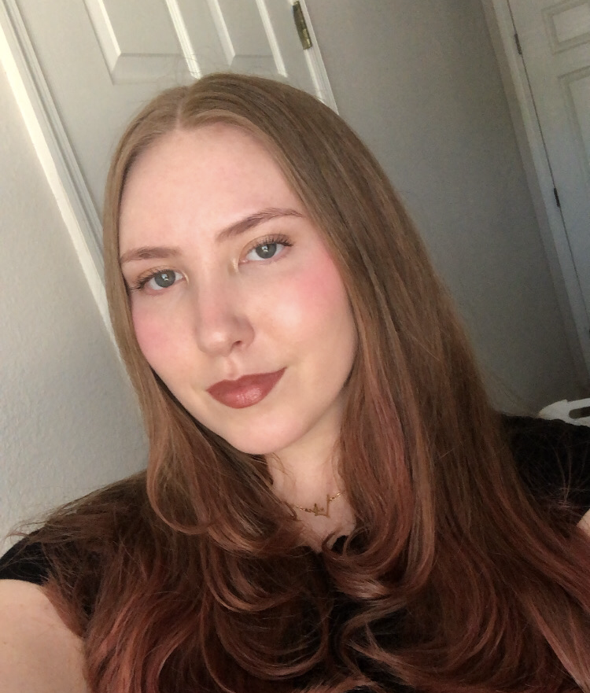

Melanie Priest

About
I am continuously learning, growing, and improving as a recently self-taught software engineer.
Determined to make an educated career pivot, my biggest goal for 2024 is to break into the tech industry
and make it my own. I know the passion I can and will bring to the programming world along with my collaborative,
analytical, and creative skills.
Education/Certifications
- 1/24 - Present: The Complete 2024 Web Development Bootcamp by Dr. Angela Yu
- 1/24 - Present: 100 Days of Code: The Complete Python Pro Bootcamp by Dr. Angela Yu
- 5/20 - Present*: Elementary Education major at the University of Central Florida *Graduating by May 4th, 2024
Technologies
- HTML
- CSS
- Javascript
- Python
- Node
- React
- PostgreSQL
- Web3
- DApps
- Git
- GitHub
- VS Code
Work History
- 1/24 - 4/24*: Student intern at Florida Virtual School *Pre-determined end date
- For the second part of my mandatory senior internship, I will be doing a full time virtual internship. I will be teaching fourth graders, attending parent-teacher conferences, grading assignments, and more.
- 8/23 - 11/23: Student intern at Lawton Elementary School
- For the first part of my mandatory senior internship, I interned part time in a Kindergarten classroom. I was supervising and leading activities on a frequent basis.
- 5/22 - 8/22: Team Member at Smallcakes Cupcakery and Creamery
- In this role, I multitasked several tasks such as fulfilling customer needs, cleaning, organizing, restocking, and working the register.
- 5/21 - 8/21: Summer Nanny via Care.com
- During this season as a temporary summer nanny, I dedicated my days to keeping the child safe, happy, and entertained. We frequently went to the park.
- 5/19 - 8/19: Summer Nanny via Care.com
- As a temporary summer nanny, I was responsible for the wellbeing and safety of a child while simultaneously implenenting fun activities. We spent many days at the pool.
- 7/18 - 2/19: Team Member at Marble Slab Creamery
- This was my first job and it taught me a ton about what it means to be a team member in a job setting. I learned how to stay calm under stressful conditions and effectively manage multiple tasks at once.
Other
Fun Facts
Contact Information